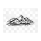
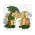

<!doctype html>
<html lang="en">
    <head>
        <meta charset="utf-8">
        <meta http-equiv="X-UA-Compatible" content="IE=edge">
        <meta name="viewport" content="initial-scale=1,user-scalable=no,maximum-scale=1,width=device-width">
        <meta name="mobile-web-app-capable" content="yes">
        <meta name="apple-mobile-web-app-capable" content="yes">
        <link rel="stylesheet" href="css/leaflet.css">
        <link rel="stylesheet" href="css/L.Control.Layers.Tree.css">
        <link rel="stylesheet" href="css/L.Control.Locate.min.css">
        <link rel="stylesheet" href="css/qgis2web.css">
        <link rel="stylesheet" href="css/fontawesome-all.min.css">
        <link rel="stylesheet" href="css/leaflet-search.css">
        <link rel="stylesheet" href="css/leaflet-control-geocoder.Geocoder.css">
        <link rel="stylesheet" href="css/leaflet-measure.css">
        <style>
        html, body, #map {
            width: 100%;
            height: 100%;
            padding: 0;
            margin: 0;
        }
        </style>
        <title></title>
    </head>
    <body>
        <div id="map">
        </div>
        <script src="js/qgis2web_expressions.js"></script>
        <script src="js/leaflet.js"></script>
        <script src="js/L.Control.Layers.Tree.min.js"></script>
        <script src="js/L.Control.Locate.min.js"></script>
        <script src="js/leaflet.rotatedMarker.js"></script>
        <script src="js/leaflet.pattern.js"></script>
        <script src="js/leaflet-hash.js"></script>
        <script src="js/Autolinker.min.js"></script>
        <script src="js/rbush.min.js"></script>
        <script src="js/labelgun.min.js"></script>
        <script src="js/labels.js"></script>
        <script src="js/leaflet-control-geocoder.Geocoder.js"></script>
        <script src="js/leaflet-measure.js"></script>
        <script src="js/leaflet-search.js"></script>
        <script src="data/touristplaces_1.js"></script>
        <script>
        var highlightLayer;
        function highlightFeature(e) {
            highlightLayer = e.target;

            if (e.target.feature.geometry.type === 'LineString' || e.target.feature.geometry.type === 'MultiLineString') {
              highlightLayer.setStyle({
                color: '#ffff00',
              });
            } else {
              highlightLayer.setStyle({
                fillColor: '#ffff00',
                fillOpacity: 1
              });
            }
            highlightLayer.openPopup();
        }
        var map = L.map('map', {
            zoomControl:false, maxZoom:28, minZoom:3
        })
        var hash = new L.Hash(map);
        map.attributionControl.setPrefix('<a href="https://github.com/tomchadwin/qgis2web" target="_blank">qgis2web</a> &middot; <a href="https://leafletjs.com" title="A JS library for interactive maps">Leaflet</a> &middot; <a href="https://qgis.org">QGIS</a>');
        var autolinker = new Autolinker({truncate: {length: 30, location: 'smart'}});
        // remove popup's row if "visible-with-data"
        function removeEmptyRowsFromPopupContent(content, feature) {
         var tempDiv = document.createElement('div');
         tempDiv.innerHTML = content;
         var rows = tempDiv.querySelectorAll('tr');
         for (var i = 0; i < rows.length; i++) {
             var td = rows[i].querySelector('td.visible-with-data');
             var key = td ? td.id : '';
             if (td && td.classList.contains('visible-with-data') && feature.properties[key] == null) {
                 rows[i].parentNode.removeChild(rows[i]);
             }
         }
         return tempDiv.innerHTML;
        }
        // add class to format popup if it contains media
		function addClassToPopupIfMedia(content, popup) {
			var tempDiv = document.createElement('div');
			tempDiv.innerHTML = content;
			if (tempDiv.querySelector('td img')) {
				popup._contentNode.classList.add('media');
					// Delay to force the redraw
					setTimeout(function() {
						popup.update();
					}, 10);
			} else {
				popup._contentNode.classList.remove('media');
			}
		}
        var zoomControl = L.control.zoom({
            position: 'topleft'
        }).addTo(map);
        L.control.locate({locateOptions: {maxZoom: 19}}).addTo(map);
        var measureControl = new L.Control.Measure({
            position: 'topleft',
            primaryLengthUnit: 'feet',
            secondaryLengthUnit: 'miles',
            primaryAreaUnit: 'sqfeet',
            secondaryAreaUnit: 'sqmiles'
        });
        measureControl.addTo(map);
        document.getElementsByClassName('leaflet-control-measure-toggle')[0].innerHTML = '';
        document.getElementsByClassName('leaflet-control-measure-toggle')[0].className += ' fas fa-ruler';
        var bounds_group = new L.featureGroup([]);
        function setBounds() {
            if (bounds_group.getLayers().length) {
                map.fitBounds(bounds_group.getBounds());
            }
        }
        map.createPane('pane_OpenStreetMap_0');
        map.getPane('pane_OpenStreetMap_0').style.zIndex = 400;
        var layer_OpenStreetMap_0 = L.tileLayer('https://tile.openstreetmap.org/{z}/{x}/{y}.png', {
            pane: 'pane_OpenStreetMap_0',
            opacity: 1.0,
            attribution: '',
            minZoom: 3,
            maxZoom: 28,
            minNativeZoom: 0,
            maxNativeZoom: 19
        });
        layer_OpenStreetMap_0;
        map.addLayer(layer_OpenStreetMap_0);
        function pop_touristplaces_1(feature, layer) {
            layer.on({
                mouseout: function(e) {
                    for (var i in e.target._eventParents) {
                        if (typeof e.target._eventParents[i].resetStyle === 'function') {
                            e.target._eventParents[i].resetStyle(e.target);
                        }
                    }
                    if (typeof layer.closePopup == 'function') {
                        layer.closePopup();
                    } else {
                        layer.eachLayer(function(feature){
                            feature.closePopup()
                        });
                    }
                },
                mouseover: highlightFeature,
            });
            var popupContent = '<table>\
                    <tr>\
                        <th scope="row">Name</th>\
                        <td class="visible-with-data" id="Name">' + (feature.properties['Name'] !== null ? autolinker.link(String(feature.properties['Name']).replace(/'/g, '\'').toLocaleString()) : '') + '</td>\
                    </tr>\
                    <tr>\
                        <th scope="row">Category</th>\
                        <td class="visible-with-data" id="Category">' + (feature.properties['Category'] !== null ? autolinker.link(String(feature.properties['Category']).replace(/'/g, '\'').toLocaleString()) : '') + '</td>\
                    </tr>\
                    <tr>\
                        <th scope="row">Latitude</th>\
                        <td>' + (feature.properties['Latitude'] !== null ? autolinker.link(String(feature.properties['Latitude']).replace(/'/g, '\'').toLocaleString()) : '') + '</td>\
                    </tr>\
                    <tr>\
                        <th scope="row">Longitude</th>\
                        <td>' + (feature.properties['Longitude'] !== null ? autolinker.link(String(feature.properties['Longitude']).replace(/'/g, '\'').toLocaleString()) : '') + '</td>\
                    </tr>\
                    <tr>\
                        <th scope="row">Description</th>\
                        <td class="visible-with-data" id="Description">' + (feature.properties['Description'] !== null ? autolinker.link(String(feature.properties['Description']).replace(/'/g, '\'').toLocaleString()) : '') + '</td>\
                    </tr>\
                </table>';
            var content = removeEmptyRowsFromPopupContent(popupContent, feature);
			layer.on('popupopen', function(e) {
				addClassToPopupIfMedia(content, e.popup);
			});
			layer.bindPopup(content, { maxHeight: 400 });
        }

        function style_touristplaces_1_0(feature) {
            switch(String(feature.properties['Category'])) {
                case 'Cemetery':
                    return {
                pane: 'pane_touristplaces_1',
        rotationAngle: 0.0,
        rotationOrigin: 'center center',
        icon: L.icon({
            iconUrl: 'markers/touristplaces_1.svg',
            iconSize: [27.822163599999996, 27.822163599999996]
        }),
                interactive: true,
            }
                    break;
                case 'Dam':
                    return {
                pane: 'pane_touristplaces_1',
        rotationAngle: 0.0,
        rotationOrigin: 'center center',
        icon: L.icon({
            iconUrl: 'markers/touristplaces_1.svg',
            iconSize: [16.9664832, 16.9664832]
        }),
                interactive: true,
            }
                    break;
                case 'Falls':
                    return {
                pane: 'pane_touristplaces_1',
        rotationAngle: 0.0,
        rotationOrigin: 'center center',
        icon: L.icon({
            iconUrl: 'markers/touristplaces_1.svg',
            iconSize: [19.534055799999997, 19.534055799999997]
        }),
                interactive: true,
            }
                    break;
                case 'Hill':
                    return {
                pane: 'pane_touristplaces_1',
        rotationAngle: 0.0,
        rotationOrigin: 'center center',
        icon: L.icon({
            iconUrl: 'markers/touristplaces_1.svg',
            iconSize: [30.357181599999997, 30.357181599999997]
        }),
                interactive: true,
            }
                    break;
                case 'Museum':
                    return {
                pane: 'pane_touristplaces_1',
        rotationAngle: 0.0,
        rotationOrigin: 'center center',
        icon: L.icon({
            iconUrl: 'markers/touristplaces_1.svg',
            iconSize: [17.479999999999997, 17.479999999999997]
        }),
                interactive: true,
            }
                    break;
                case 'Park':
                    return {
                pane: 'pane_touristplaces_1',
        rotationAngle: 0.0,
        rotationOrigin: 'center center',
        icon: L.icon({
            iconUrl: 'markers/touristplaces_1.svg',
            iconSize: [29.924999999999997, 29.924999999999997]
        }),
                interactive: true,
            }
                    break;
                case 'Temple':
                    return {
                pane: 'pane_touristplaces_1',
        rotationAngle: 0.0,
        rotationOrigin: 'center center',
        icon: L.icon({
            iconUrl: 'markers/touristplaces_1.svg',
            iconSize: [23.56, 23.56]
        }),
                interactive: true,
            }
                    break;
                case 'Valley':
                    return {
                pane: 'pane_touristplaces_1',
        rotationAngle: 0.0,
        rotationOrigin: 'center center',
        icon: L.icon({
            iconUrl: 'markers/touristplaces_1.svg',
            iconSize: [34.559461, 34.559461]
        }),
                interactive: true,
            }
                    break;
                case 'Zoo':
                    return {
                pane: 'pane_touristplaces_1',
        rotationAngle: 0.0,
        rotationOrigin: 'center center',
        icon: L.icon({
            iconUrl: 'markers/touristplaces_1.svg',
            iconSize: [28.595, 28.595]
        }),
                interactive: true,
            }
                    break;
                default:
                    return {
                pane: 'pane_touristplaces_1',
                radius: 4.0,
                opacity: 1,
                color: 'rgba(35,35,35,1.0)',
                dashArray: '',
                lineCap: 'butt',
                lineJoin: 'miter',
                weight: 1,
                fill: true,
                fillOpacity: 1,
                fillColor: 'rgba(41,206,115,1.0)',
                interactive: true,
            }
                    break;
            }
        }
        map.createPane('pane_touristplaces_1');
        map.getPane('pane_touristplaces_1').style.zIndex = 401;
        map.getPane('pane_touristplaces_1').style['mix-blend-mode'] = 'normal';
        var layer_touristplaces_1 = new L.geoJson(json_touristplaces_1, {
            attribution: '',
            interactive: true,
            dataVar: 'json_touristplaces_1',
            layerName: 'layer_touristplaces_1',
            pane: 'pane_touristplaces_1',
            onEachFeature: pop_touristplaces_1,
            pointToLayer: function (feature, latlng) {
                var context = {
                    feature: feature,
                    variables: {}
                };
                return L.circleMarker(latlng, style_touristplaces_1_0(feature));
            },
        });
        bounds_group.addLayer(layer_touristplaces_1);
        map.addLayer(layer_touristplaces_1);
        var osmGeocoder = new L.Control.Geocoder({
            collapsed: true,
            position: 'topleft',
            text: 'Search',
            title: 'Testing'
        }).addTo(map);
        document.getElementsByClassName('leaflet-control-geocoder-icon')[0]
        .className += ' fa fa-search';
        document.getElementsByClassName('leaflet-control-geocoder-icon')[0]
        .title += 'Search for a place';
        var overlaysTree = [
            {label: 'tourist places<br /><table><tr><td style="text-align: center;"></td><td>Cemetery</td></tr><tr><td style="text-align: center;"></td><td>Dam</td></tr><tr><td style="text-align: center;"></td><td>Falls</td></tr><tr><td style="text-align: center;"></td><td>Hill</td></tr><tr><td style="text-align: center;"></td><td>Museum</td></tr><tr><td style="text-align: center;"></td><td>Park</td></tr><tr><td style="text-align: center;"></td><td>Temple</td></tr><tr><td style="text-align: center;"></td><td>Valley</td></tr><tr><td style="text-align: center;"></td><td>Zoo</td></tr><tr><td style="text-align: center;"></td><td></td></tr></table>', layer: layer_touristplaces_1},
            {label: "OpenStreetMap", layer: layer_OpenStreetMap_0},]
        var lay = L.control.layers.tree(null, overlaysTree,{
            //namedToggle: true,
            //selectorBack: false,
            //closedSymbol: '&#8862; &#x1f5c0;',
            //openedSymbol: '&#8863; &#x1f5c1;',
            //collapseAll: 'Collapse all',
            //expandAll: 'Expand all',
            collapsed: false, 
        });
        lay.addTo(map);
		document.addEventListener("DOMContentLoaded", function() {
            // set new Layers List height which considers toggle icon
            function newLayersListHeight() {
                var layerScrollbarElement = document.querySelector('.leaflet-control-layers-scrollbar');
                if (layerScrollbarElement) {
                    var layersListElement = document.querySelector('.leaflet-control-layers-list');
                    var originalHeight = layersListElement.style.height 
                        || window.getComputedStyle(layersListElement).height;
                    var newHeight = parseFloat(originalHeight) - 50;
                    layersListElement.style.height = newHeight + 'px';
                }
            }
            var isLayersListExpanded = true;
            var controlLayersElement = document.querySelector('.leaflet-control-layers');
            var toggleLayerControl = document.querySelector('.leaflet-control-layers-toggle');
            // toggle Collapsed/Expanded and apply new Layers List height
            toggleLayerControl.addEventListener('click', function() {
                if (isLayersListExpanded) {
                    controlLayersElement.classList.remove('leaflet-control-layers-expanded');
                } else {
                    controlLayersElement.classList.add('leaflet-control-layers-expanded');
                }
                isLayersListExpanded = !isLayersListExpanded;
                newLayersListHeight()
            });	
			// apply new Layers List height if toggle layerstree
			if (controlLayersElement) {
				controlLayersElement.addEventListener('click', function(event) {
					var toggleLayerHeaderPointer = event.target.closest('.leaflet-layerstree-header-pointer span');
					if (toggleLayerHeaderPointer) {
						newLayersListHeight();
					}
				});
			}
            // Collapsed/Expanded at Start to apply new height
            setTimeout(function() {
                toggleLayerControl.click();
            }, 10);
            setTimeout(function() {
                toggleLayerControl.click();
            }, 10);
            // Collapsed touch/small screen
            var isSmallScreen = window.innerWidth < 650;
            if (isSmallScreen) {
                setTimeout(function() {
                    controlLayersElement.classList.remove('leaflet-control-layers-expanded');
                    isLayersListExpanded = !isLayersListExpanded;
                }, 500);
            }  
        });       
        setBounds();
        map.addControl(new L.Control.Search({
            layer: layer_touristplaces_1,
            initial: false,
            hideMarkerOnCollapse: true,
            propertyName: 'Category'}));
        document.getElementsByClassName('search-button')[0].className +=
         ' fa fa-binoculars';
        </script>
    </body>
</html>
